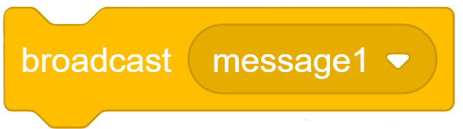

เนื้อหาบทเรียน
เมื่อคุณสร้างโปรเจกต์ที่มีหลายหน้าจอ หรือโค้ดที่มีความยาวมากๆ คุณจะได้พบกับการส่งข้อความ (Broadcast) และการสร้างบล็อกคำสั่งของตนเอง (My Blocks) เพื่อจัดการให้โค้ดมีความเป็นระเบียบและลดความยาวของชุดคำสั่ง

1. การส่งข้อความ (Broadcast)
การ Broadcast หรือการออกอากาศข้อความ เป็นกระบวนการที่ให้ตัวละครหนึ่ง หรือฉากหลัง ส่งสัญญาณแบบซ่อนรูปให้กับตัวละครอื่นๆ ทั้งโปรแกรมได้รับรู้เหตุการณ์ เป็นเครื่องมือที่มีประสิทธิภาพในการสั่งงานพร้อมกัน
- Broadcast [message1 v]: ทำหน้าที่ในการส่งสัญญาณออกไป
- When I receive [message1 v]: เป็นเหตุการณ์ของคนรับสัญญาณ (ใช้เป็นหมวกของชุดคำสั่ง) ทุกตัวที่มีหมวกนี้จะทำงานทันทีที่มีคนส่งมา
- ตัวอย่างการประยุกต์ใช้: เมื่อคะแนนเยอะเกิน 50 คะแนน ตัวละครหลักใช้คำสั่ง Broadcast ข้อความ
game_wonแล้วฉากหลังที่มีWhen I receive game_wonจะเปลี่ยนพื้นหลังเป็นคำว่า You Win ทันที!

2. การสร้างฟังก์ชันเสริม (My Blocks)
ถ้ามีชุดคำสั่งยาวๆ ที่ต้องทำซ้ำๆ การทำโค้ดชุดเดียวกันหลายรอบจะทำให้ตาลาย เราจึงมักสร้างเป็น "ฟังก์ชันใหม่" ขึ้นมาใช้งานแทน
- ใช้ปุ่ม Make a Block ในหมวดสีชมพู แล้วตั้งชื่อ เช่น
JumpAndTwirl - นำบล็อกสีชมพูใหม่ไปต่อกับกระบวนการที่ต้องการทำซ้ำ แล้วนำบล็อกชิ้นเล็ก
JumpAndTwirlไปใช้งานได้เลย - มีประโยชน์อย่างมากสำหรับการแยกส่วนระบบเกม เช่น ทำให้มีบล็อก
Reset Player,Spawn Enemyแยกส่วนออกจากกันชัดเจน
ความท้าทายสุดท้าย:
ลองผสานทุกอย่างดู! ในโครงงานหน้า ให้นำความรู้ทั้ง 5 บทไปใช้ในการสร้างเกม ทั้งตัวแปร การรับรู้ เงื่อนไข และการส่งข้อความ เพื่อให้ได้โปรเจกต์เกมที่สมบูรณ์!